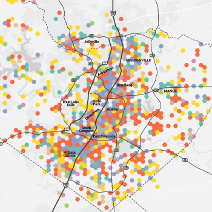

ADAM HUMPHREY
Hello world!
I'm a technical writer at National Instruments. I create hardware documentation for the NI Semiconductor Test System, and prevously published LabVIEW documentation.
I graduated from the University of Texas in 2016 with a journalism degree and a goal to help people understand the world around them through data viz, writing, and coding. At this point, this portfolio exists purely for my nostalgia.
Data Viz

Who Let the Dogs Out?
Coursework
Austin Under Fire
Coursework
Guns Over Texas
CourseworkClips
Austin Monthly
Another One Bites the Dust: Austin Music Hall Set to Close in 2016Silk Road Founder Sentenced to Life in Prison
Sweet Land of Liberty
Finger-lickin' Good
Walking the Stage
Ongoing: Festival Flicks
Hey Daddy-O
Wedded Bliss?
10 Important Facts About the Memorial Day Floods
Root for the Home Teams
War Games
Divine Radness
And Justice for All?
A Done Deal
Last One In!
Just For Kicks
NewBay Media
Massive Open Online Courses– Lessons from the Front LinesClassroom Tech Roll Call: The Flipped Classroom 2.0
The Alcalde
A Flying Longhorn Gets Up Close With Polar BearsBehold the Glory of this Petri-Dish Longhorn
The Daily Texan
Senior Tech Staffer Reminisces on Time Spent in BasementUT Should Rethink Focus on Four Year Graduation Rates
Students Should Explore Interests with Pass/Fail Classes
Austin is Ready for its Major League Debut
Ride Hailing Helps Prevent Drunk Driving
Campus Carry Sets Dangerous Precedent with Minimal Impact
Universities Should Look to Texas for Organization Discipline Policy
Moody College Gender Disparity Goes Beyond Students